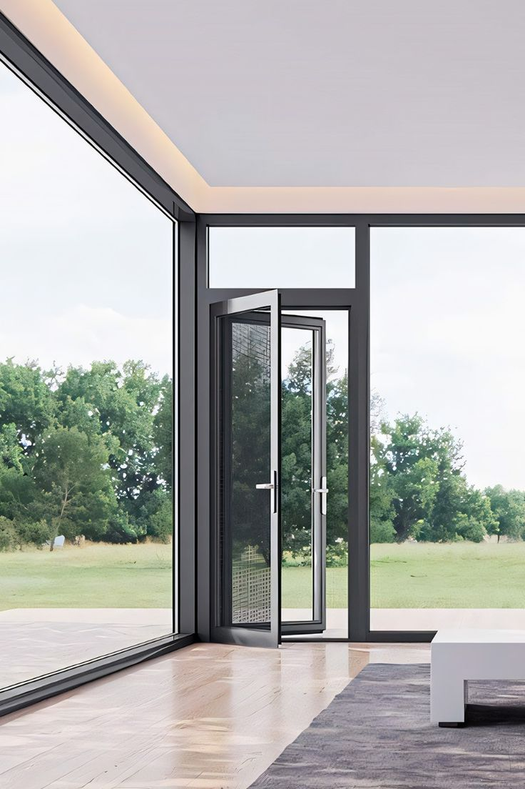

Product Details
Precision-crafted quality for your space.

Sliding Aluminum Windows
Our sliding aluminum windows are designed for modern homes and offices. Featuring smooth-gliding mechanisms, superior thermal insulation, and sleek profiles, these windows combine aesthetics with functionality. Available in a range of finishes and glass options to match your interior design.
Key Features
- Smooth sliding mechanism with anti-lift security
- Powder-coated aluminum frame in multiple colors
- Thermal break technology for energy efficiency
- Weather-resistant seals and gaskets
- Available in single and double sliding configurations
- Tempered or laminated glass options
Available Finishes
Maintenance
Regular cleaning with mild soap and water is recommended. Lubricate sliding tracks annually for smooth operation. Avoid abrasive cleaners on glass and frame surfaces.
Request QuoteYou May Also Like

Windows Windows
Windows
 Doors
Doors
Free Measurement
Professional on-site measurement included with every order.
Expert Installation
Trained installation teams handle fabrication to finishing.
On-Time Delivery
We respect your schedule and deliver when we promise.
Quality Assured
Dedicated after-sales support and workmanship guarantees.
Need a Custom Solution?
We fabricate custom sizes and configurations. Get in touch for a personalized quote.
Request a Quote